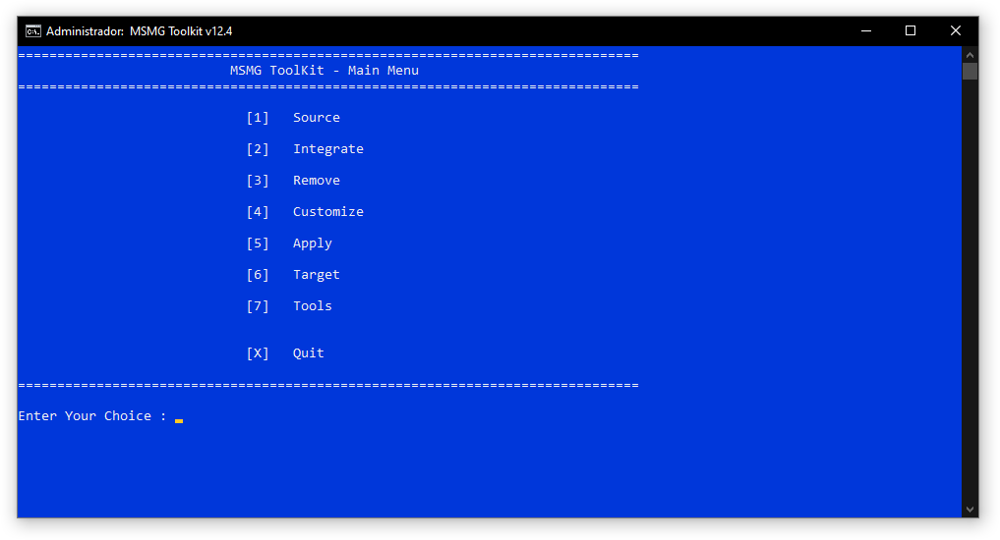
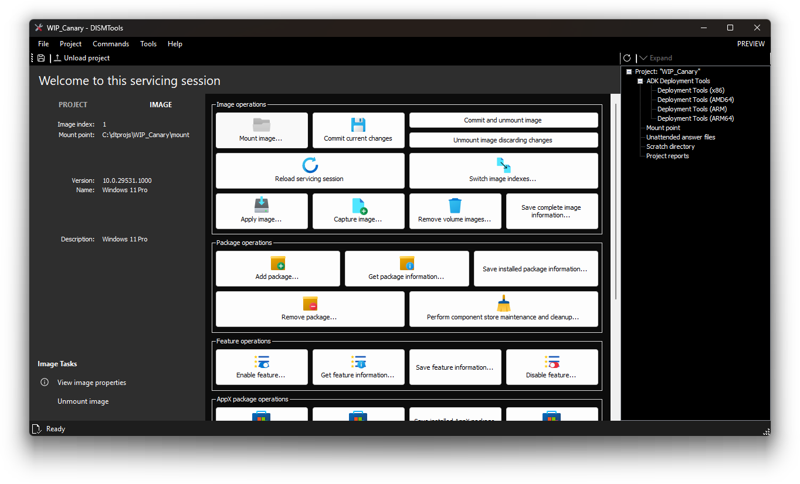

Coming from MSMG Toolkit

MSMG Toolkit is a free and open-source UI for DISM operations, which lets you integrate packages, manage features, and more. If you are coming from this utility to DISMTools, here are some changes:
User interfaces
MSMG Toolkit is a terminal user interface (TUI) front-end with menus that you can operate by pressing a keyboard button. This is still intuitive, but not as much as a graphical user interface (GUI) front-end; which DISMTools and other UIs are.

Operations
With MSMG Toolkit, you have to copy the files from a Windows Setup disc to the ISO folder of the Toolkit launch directory and specify a Windows image to customize. With DISMTools, however, you don't have to. You only have to copy the Windows image you want from the sources directory of the Windows Setup disc to any location, create a project, and mount the image to it.
If you've loaded a Windows image into MSMG Toolkit and closed it, the program will unmount it. If you force the closure of the program and launch it again, it will remove EVERY file from the Windows image, making it invalid and unrepairable. This can be done because the Toolkit is launched as TrustedInstaller by default. You don't need to worry about that with DISMTools. After mounting an image to a project, it will stay there, even if you close the program; until you want to unmount it. Also, the program will leave the mounted images alone when starting up, apart from reloading their servicing sessions if the images need a remount.
With MSMG Toolkit, you can only manage Windows images. However, with DISMTools, you can manage Windows images and installations of any kind.